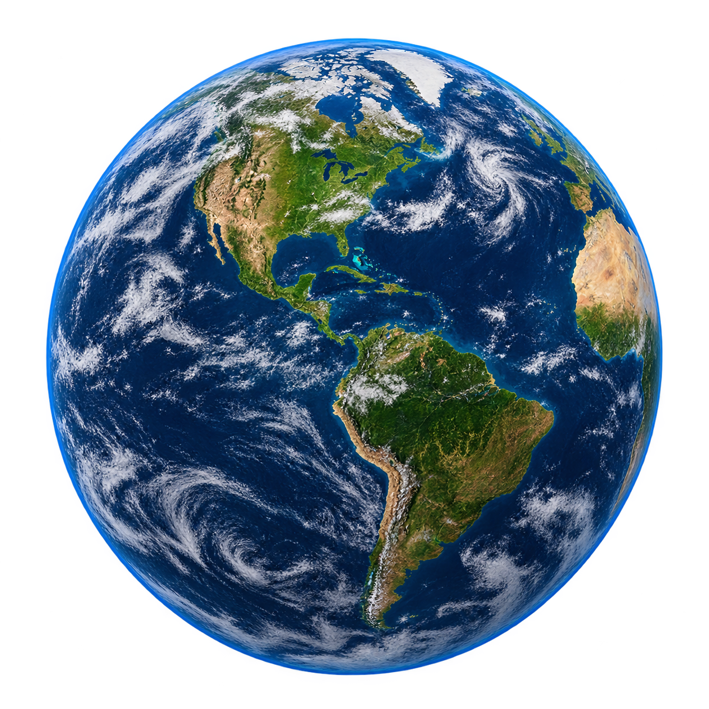

CALCULADORA GRAVITACIONAL DEL SISTEMA SOLAR
Calcula tu peso en diferentes cuerpos celestes del Sistema Solar.
Parámetros
Tierra

Tu peso sería:
kgTamaño
12.742 km
Composición
Roca y minerales
Lunas
1
Distancia al Sol
149.6 millones km
Sobre ASTROGRAV
ASTROGRAV utiliza los valores de gravedad de cada planeta para calcular cómo cambiaría tu peso al estar en diferentes lugares del Sistema Solar.
Explora el sistema solar
Descubre cómo cambia tu peso según la gravedad de cada planeta.